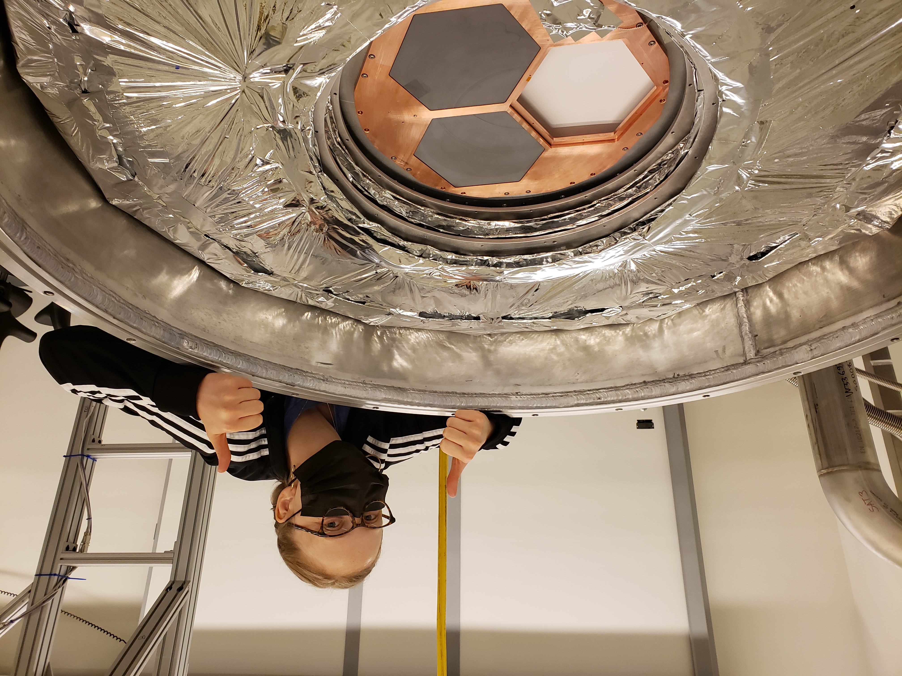

NSF Graduate Student Research Fellow. PhD Candidate at the University of Chicago. Holography, optics and mm-wave electronics for ground-based cosmology observatories.
I am a PhD Candidate and National Science Foundation Graduate Student Research Fellow at the University of Chicago. I work to understand the optical systematics of The Simons Observatory Large Aperture Telescope.
